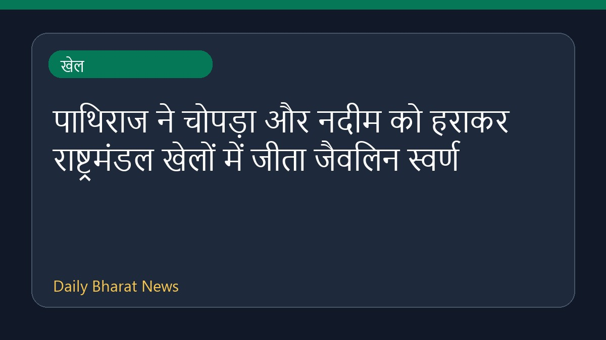

पाथिराज ने चोपड़ा और नदीम को हराकर राष्ट्रमंडल खेलों में जीता जैवलिन स्वर्ण

राष्ट्रमंडल खेलों में जैवलिन थ्रूप्रतिस्पर्धा के दौरान श्रीलंका के रुमेश पाथिराज ने नीरज चोपड़ा और अरशद नदीम को पीछे छोड़ते हुए स्वर्ण पदक हासिल किया है। इस प्रतियोगिता में भारत के नीरज चोपड़ा ने रजत पदक अपने नाम किया, जबकि यशवीर सिंह ने अपने अंतिम प्रयास के शानदार प्रदर्शन से कांस्य पदक जीता। इसके साथ ही भारत ने जैवलिन स्पर्धा में दोहरा पोडियम हासिल किया। राष्ट्रमंडल खेलों के नौवें दिन के अन्य मुकाबलों में भारत के जूडो खिलाड़ियों और अन्य स्पर्धाओं में भी पदक जीते गए।
मूल स्रोत: Sports News Sources
Pathirage beats Chopra and Nadeem to win Commonwealth gold in javelin - Al Jazeera ↗
Pathirage beats Chopra and Nadeem to win Commonwealth gold in javelin - Al Jazeera ↗